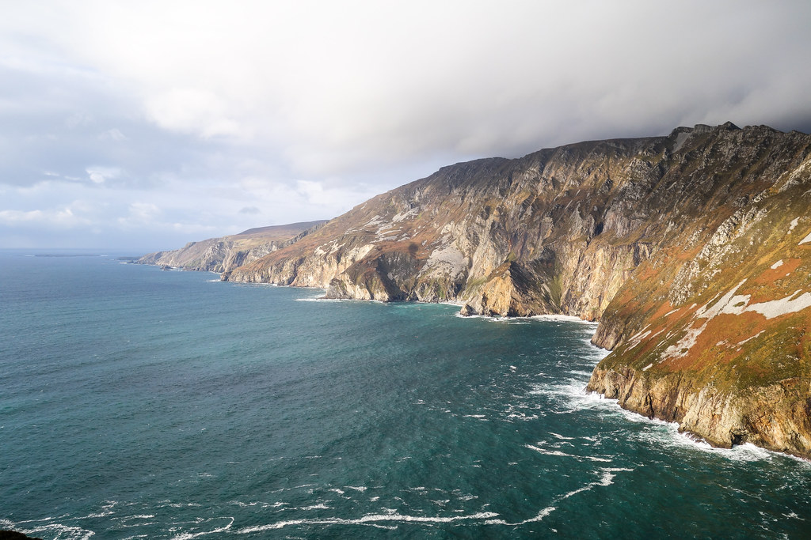
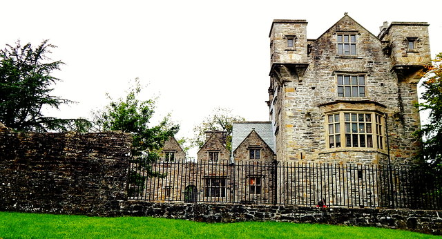
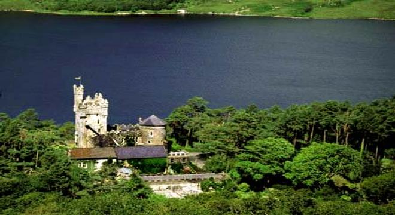

About Donegal

County Donegal is a county of Ireland in the province of Ulster. It is named after the town of Donegal (Dún na nGall, meaning 'fort of the foreigners') in the south of the county. Donegal County Council is the local council and Lifford the county town. The population was 159,192 at the 2016 census. It has also been known as (County) Tyrconnell (Tír Chonaill, meaning 'Land of Conall'), after the historic territory of the same name. In terms of size and area, it is the largest county in Ulster and the fourth-largest county in all of Ireland. Uniquely, County Donegal shares a small border with only one other county in the Republic of Ireland – County Leitrim. The greater part of its land border is shared with three counties of Northern Ireland: County Londonderry, County Tyrone and County Fermanagh. This geographic isolation from the rest of the Republic has led to Donegal people maintaining a distinct cultural identity and has been used to market the county with the slogan "Up here it's different". While Lifford is the county town, Letterkenny is by far the largest town in the county with a population of 19,588. Letterkenny and the nearby city of Derry form the main economic axis of the northwest of Ireland. Indeed, what became the City of Derry was officially part of County Donegal up until 1610. The county may be informally divided into a number of traditional districts. There are two Gaeltacht districts in the west. According to the 1841 Census, County Donegal had a population of 296,000 people. As a result of famine and emigration, the population had reduced by 41,000 by 1851 and further reduced by 18,000 by 1861. By the time of the 1951 Census the population was only 44% of what it had been in 1841. As of 2016, the county's population was 159,192. The county is the most mountainous in Ulster consisting chiefly of two ranges of low mountains; the Derryveagh Mountains in the north and the Blue Stack Mountains in the south, with Errigal at 749 metres (2,457 ft) the highest peak. It has a deeply indented coastline forming natural sea loughs, of which both Lough Swilly and Lough Foyle are the most notable. The Slieve League cliffs are the sixth-highest sea cliffs in Europe, while Malin Head is the most northerly point on the island of Ireland. Click here to find info link.
Top Destinations in Donegal
  Donegal natives often say that Donegal is the forgotten county of Ireland as they feel that it is cut off from the rest of the Republic of Ireland, both economically and geographically. Its proximity to Northern Ireland means that it suffered from a lack of tourist numbers during the recent troubles there and has been heavily influenced by that province's economic fortunes. Much of its border is shared with Northern Ireland, with only about 20 km of land connecting it to the Republic, on the Bundoran to Sligo road. Thus, Donegal is not as accessible as other tourist-oriented places in the Republic of Ireland, such as County Galway or County Kerry and this means it is not as commercialised in the tourist sense. This can be a good thing or a bad thing, depending on your expectations. If you are looking to get away from over-commercialised tourism, Donegal can offer unspoilt scenery (apart from over-building of holiday homes and chalets in areas like Dunfanaghy and Downings) and cheaper prices. To combat the overdevelopment of holiday homes, Donegal county council has adapted a plan whereas only one in five houses will be developed as holiday homes in the future. The downside of not being as commercialised as other Irish counties is that facilities and amenities are not as readily available in Donegal and travelling out-of season will restrict your options. On the other hand, if you are into fishing, walking, rock-climbing,water sports or golfing, and you are prepared to "rough it" at times in the less developed and populated areas of the county, then Donegal has a lot to offer the more adventurous visitor. Donegal's rugged landscape lends itself to active sports like climbing, hillwalking and surfing. Many people travel to Donegal for the superb golf courses - long sandy beaches and extensive dune systems are a feature of the county, and many links courses have been developed. Click here to find info link